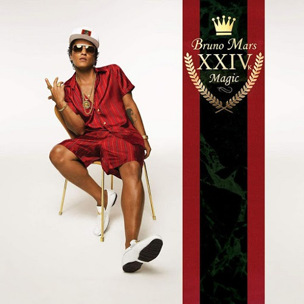

Lista de ganhadores de Grammy
-

Album: Kacey Musgraves – Golden Hour
ano: 2019
ganhou Grammy: Sim
Outros Indicados: Post Malone – Beerbongs & Bentleys,
Black Panther: The Album,
Music from and Inspired by,
Brandi Carlile – By the Way,
I Forgive You,
Janelle Monáe – Dirty Computer,
H.E.R. – H.E.R., Cardi B – Invasion of Privacy,
Drake – Scorpion"
Saiba mais
-

Album: Bruno Mars – 24K Magic
ano: 2018
ganhouGrammy: Sim
outrosIndicados: Childish Gambino – “Awaken, My Love!” ,
Kendrick Lamar – DAMN.,
Jay-Z – 4:44,
Lorde – Melodrama
Saiba mais
-

Album: Adele – 25
ano: 2017
ganhouGrammy: Sim
outrosIndicados: Beyoncé – Lemonade,
Justin Bieber – Purpose,
Sturgill Simpson – A Sailor’s Guide to Earth,
Drake – Views]
Saiba mais